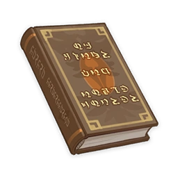

Mondstadt · Books & Literature
History of Kings and Clans: Prologue
A Mondstadt history compiled from surviving aristocratic-era poems, songs, and legends with archaeological commentary. Its prologue outlines three sections and warns that some details cannot be verified.

A prologue, not the full history
The quest-item description calls this a comprehensive history of Mondstadt edited and compiled by the Northland History Society. The Prologue introduces the project's purpose, evidence, and three-part structure; it does not give the full account promised by the collection. The item is found in the Grand Master's Office at the Knights of Favonius Headquarters.
No individual historian is named. Credit the Northland History Society as editor and compiler rather than assigning the text to an invented author.
How the collection builds its account
The Society says it gathered poems, songs, and legends that survived from the aristocratic period, then interspersed them with archaeologists' commentary. It presents this mix as a way to recount Mondstadt's past from the Age of Kings through the fall of the Aristocracy.
The preface also admits that some details are impossible to verify and that historical inaccuracies are inevitable. The book is therefore a deliberate reconstruction from partial cultural records, not a claim that every episode is preserved in a complete contemporary archive.
Three sections in the prologue
The first section, The Stormlord of the Tower and the Kingwolf of Boreas, covers the struggle between the Kings of Ice and Frost before Barbatos arrived. The second, The Cultivation of Mondstadt, turns to the nation's ancestors—including the predecessors of the aristocrats—and the development of agriculture.
The third section, Tyrants, Heirs, and Rebels, covers the long reign of Mondstadt's Aristocracy. These descriptions establish broad subjects and chronology; the prologue does not identify every ruler, family, or event in those sections.
The account of historical suppression
The Society's opening frame says aristocratic rulers discouraged the study of history and forbade speech or song that referred to historical events. It interprets that suppression as an attempt to keep the rulers' deeds from later scrutiny.
This is the collection's stated editorial position. It is evidence for how the post-aristocratic editors wanted readers to understand the recovery of the past, while the surviving poems, songs, commentary, and other named records provide the material through which individual claims can be checked.
An unresolved transcription difference
Two archived English transcriptions disagree over one sentence about whether the collection was compiled as a cautionary tale: the Genshin Impact Wiki says it was, while Honey Hunter World's item text says it was not. The available archive records do not resolve which wording matches the in-game English text, so this guide does not use that disputed sentence to define the book's purpose.
Both transcriptions otherwise describe the work as seeking truth, sharing stories once forbidden, and encouraging later readers to investigate Mondstadt's past. Those are the more secure themes to carry forward.
Later excerpts reveal more of the collection
Fortune Slips in the Imaginarium Theater quote passages attributed to Tyrants, Heirs, and Rebels. The surviving citations include chapter I and chapter XII, while the archive lists at least five chapters in The Cultivation of Mondstadt and at least twelve in Tyrants, Heirs, and Rebels.
These later excerpts show that the named sections extend well beyond the outline in the Prologue. They offer fragments rather than a complete copy, so they should not be treated as a substitute for the missing chapters or as a continuous chronology.
Reading it as a historical source
The Prologue is most useful for understanding the Society's method and priorities: assemble surviving cultural records, add archaeological commentary, acknowledge uncertainty, and reopen stories that the editors say were suppressed. Its historical scope reaches from the Age of Kings to the end of aristocratic rule, but its own caveat warns against assuming every detail is settled.
Keep the book's framing distinct from corroborated events in character stories, artifacts, and quests. The Prologue supplies a map for Mondstadt's past; it does not, by itself, prove a detailed political history of particular clans or the identity and actions of every figure in that history.
This is an original CoreGG reading guide, not an official HoYoverse article or a reproduction of the game text. Source links below identify the records used so you can check the original context.
Sources & references
Check these sources for the original game text and reference trail.